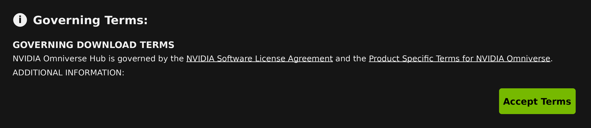

Container Installation#
Isaac Sim의 컨테이너 설치는 Linux를 실행하는 Docker 컨테이너를 사용하여 원격 헤드리스 서버 또는 클라우드에 배포하는 경우에 권장됩니다.
Container Setup#
시스템이 NVIDIA Isaac Sim 실행을 위한 시스템 요구 사항을 충족하는지 확인하세요.
Docker 설치:
# Docker installation using the convenience script
curl -fsSL https://get.docker.com -o get-docker.sh
sudo sh get-docker.sh
# Post-install steps for Docker
sudo groupadd docker
sudo usermod -aG docker $USER
newgrp docker
# Verify Docker
docker run hello-world
See also
NVIDIA Container Toolkit 설치:
# Configure the repository
curl -fsSL https://nvidia.github.io/libnvidia-container/gpgkey | sudo gpg --dearmor -o /usr/share/keyrings/nvidia-container-toolkit-keyring.gpg \
&& curl -s -L https://nvidia.github.io/libnvidia-container/stable/deb/nvidia-container-toolkit.list | \
sed 's#deb https://#deb [signed-by=/usr/share/keyrings/nvidia-container-toolkit-keyring.gpg] https://#g' | \
sudo tee /etc/apt/sources.list.d/nvidia-container-toolkit.list \
&& \
sudo apt-get update
# Install the NVIDIA Container Toolkit packages
sudo apt-get install -y nvidia-container-toolkit
sudo systemctl restart docker
# Configure the container runtime
sudo nvidia-ctk runtime configure --runtime=docker
sudo systemctl restart docker
# Verify NVIDIA Container Toolkit
docker run --rm --runtime=nvidia --gpus all nvcr.io/nvidia/cuda:12.8.0-base-ubuntu24.04 nvidia-smi
Note
보안 수정 사항을 받으려면 최신 버전의 NVIDIA Container Toolkit을 설치하세요.
검증 단계에서는 NGC에서 호스팅된 CUDA 기본 이미지(
nvcr.io/nvidia/cuda)를 사용합니다. 이 이미지는 공개적이며 Docker Hub의 익명 풀 속도 제한(HTTP429 Too Many Requests)을 피할 수 있습니다. 멀티 아키텍처 이미지이므로 동일한 태그로 Linux x86_64 및 aarch64에서 실행됩니다.Docker Hub에서 풀하는 단계(예:
docker run hello-world)가429 Too Many Requests로 실패하면, Docker Hub가 익명 풀에 속도 제한을 적용하므로 먼저docker login을 실행하거나 나중에 다시 시도하세요.
Container Deployment#
이 섹션에서는 라이브스트리밍과 함께 NVIDIA Isaac Sim 컨테이너를 헤드리스 모드로 실행하는 방법을 설명합니다.
단계:
컨테이너 사전 요구 사항을 설정하고 설치합니다. 위의 컨테이너 설정을 참조하세요.
다음 명령을 실행하여 GPU 드라이버 버전을 확인합니다:
nvidia-smi
Isaac Sim Container 가져오기:
docker pull nvcr.io/nvidia/isaac-sim:6.0.0
호스트에 캐시된 볼륨 마운트를 만듭니다. 각 디렉터리는 아래의
docker run명령의 컨테이너 볼륨 마운트에 매핑됩니다:
mkdir -p ~/docker/isaac-sim/cache/main
mkdir -p ~/docker/isaac-sim/cache/computecache
mkdir -p ~/docker/isaac-sim/config
mkdir -p ~/docker/isaac-sim/data
mkdir -p ~/docker/isaac-sim/logs
mkdir -p ~/docker/isaac-sim/pkg
mkdir -p ~/.cache/ov/hub
sudo chown -R 1234:1234 ~/docker/isaac-sim ~/.cache/ov/hub
대화형 Bash 세션으로 Isaac Sim 컨테이너를 실행합니다:
docker run --name isaac-sim --entrypoint bash -it --gpus all -e "ACCEPT_EULA=Y" --rm --network=host \
-e "PRIVACY_CONSENT=Y" \
-v ~/docker/isaac-sim/cache/main:/isaac-sim/.cache:rw \
-v ~/docker/isaac-sim/cache/computecache:/isaac-sim/.nv/ComputeCache:rw \
-v ~/docker/isaac-sim/logs:/isaac-sim/.nvidia-omniverse/logs:rw \
-v ~/docker/isaac-sim/config:/isaac-sim/.nvidia-omniverse/config:rw \
-v ~/docker/isaac-sim/data:/isaac-sim/.local/share/ov/data:rw \
-v ~/docker/isaac-sim/pkg:/isaac-sim/.local/share/ov/pkg:rw \
-v ~/.cache/ov/hub:/var/cache/hub:rw \
-u 1234:1234 \
nvcr.io/nvidia/isaac-sim:6.0.0
Important
--network=host는 WebRTC 라이브스트리밍에 필요합니다. NVIDIA 스트리밍 SDK는 UDP 미디어
소켓을 컨테이너 내부의 실제 네트워크 인터페이스인 ISAACSIM_HOST 주소에 바인딩합니다.
Docker 브릿지 네트워킹(-p 포트 퍼블리싱)은 호스트 IP가 컨테이너의
네트워크 네임스페이스 내부에서 사용 불가능하기 때문에 작동하지 않습니다 — 시그널링은 연결될 수 있지만 비디오 스트림은 연결되지 않습니다.
Note
Isaac Sim 컨테이너는 이제 루트리스 사용자로 실행됩니다.
Isaac Sim 컨테이너는 이제 멀티 아키텍처를 지원합니다. 동일한 태그를 Linux x86_64 및 aarch64 시스템에서 실행할 수 있습니다.
-e "ACCEPT_EULA=Y"플래그를 사용함으로써 NVIDIA Omniverse License Agreement에서 이미지의 라이선스 계약에 동의합니다.-e "PRIVACY_CONSENT=Y"플래그를 사용함으로써 Data Collection & Usage에서 데이터 수집 계약에 동의합니다. 이 플래그를 설정하지 않으면 거부할 수 있습니다.-e "PRIVACY_USERID=<email>"플래그는 세션 로그에 태그를 지정하기 위해 선택적으로 설정할 수 있습니다.컨테이너에서 GPU 감지 문제가 있는 경우
--runtime=nvidia플래그를 추가합니다.엔터프라이즈 사용자는 Enterprise Nucleus Server를 참조하세요.
Isaac Sim 컨테이너는 Nucleus 서버를 사용할 수 없는 경우 클라우드의 에셋을 사용합니다.
별도의 Nucleus 서버를 사용하는 경우:
컨테이너의 모든 포트를 노출하고 외부 Nucleus 서버에 연결하려면 Docker 컨테이너 연결 문제를 참조하세요.
기본 Nucleus 서버를 설정하려면 기본 Nucleus 서버 설정을 참조하세요.
Nucleus 서버 연결을 위한 기본 자격 증명을 설정하려면 Nucleus 서버 연결을 위한 기본 사용자 이름 및 비밀번호 설정을 참조하세요.
환경 변수
다음 환경 변수를 docker run에 -e로 전달하여 컨테이너 동작을 제어할 수 있습니다:
변수 |
필수 |
설명 |
|---|---|---|
|
예 |
라이선스 계약에 동의합니다( |
|
아니오 |
데이터 수집에 동의합니다( |
|
아니오 |
텔레메트리 데이터에 사용자 ID 태그를 지정합니다(예: 이메일 주소). Data Collection & Usage를 참조하세요. |
|
아니오 |
기본 에셋 루트를 재정의합니다( |
|
아니오 |
라이브스트림을 위한 호스트의 공용 또는 사설 IP. 기본값: |
|
아니오 |
WebRTC 시그널링 포트. 기본값: |
|
아니오 |
WebRTC 미디어 스트리밍 포트. 기본값: |
Isaac Sim과의 시스템 호환성을 확인합니다:
./isaac-sim.compatibility_check.sh --/app/quitAfter=10 --no-window
Note
Compatibility Checker를 별도로 실행하려면:
docker run --entrypoint bash -it --gpus all --rm --network=host \
nvcr.io/nvidia/isaac-sim:6.0.0 ./isaac-sim.compatibility_check.sh --/app/quitAfter=10 --no-window
시스템이 호환되면 "System checking result: PASSED" 텍스트가 표시됩니다.
네이티브 라이브스트림 모드로 Isaac Sim 시작:
./runheadless.sh -v
스트리밍 포트
호스트 방화벽이 활성화된 경우(예: UFW), 다음 포트를 허용합니다:
포트 |
프로토콜 |
용도 |
|---|---|---|
|
TCP |
웹 뷰어(Docker Compose만 해당) |
|
TCP |
WebRTC 시그널링 |
|
UDP |
WebRTC 미디어 스트림 |
ISAACSIM_SIGNAL_PORT, ISAACSIM_STREAM_PORT, 또는 WEB_VIEWER_PORT를 통해 포트를 재정의하는 경우 해당 포트를 대신 엽니다.
Note
- 라이브스트림 클라이언트를 실행하기 전에 Isaac Sim 앱이 로드되어 준비된 상태여야 합니다.
Isaac Sim이 완전히 로드되는 데 몇 분 정도 걸릴 수 있습니다.
-v 플래그는 셰이더 캐시가 워밍업되는 동안 추가 로그를 표시하는 데 사용됩니다.
이를 확인하려면 콘솔 또는 로그에서 다음 줄을 찾으세요:
Isaac Sim Full Streaming App is loaded.
Isaac Sim을 처음 로드할 때 셰이더를 캐싱하는 데 시간이 걸립니다. 컨테이너 실행 시 캐시가 마운트되어 있으므로 이후 Isaac Sim 실행은 더 빠릅니다.
컨테이너 사용 시 Isaac Sim 구성과 캐시를 영속화하려면 Isaac Sim 구성을 로컬 디스크에 저장을 참조하세요.
네이티브 Isaac Sim WebRTC Streaming Client를 연결하여 Isaac Sim을 봅니다. 최신 릴리스 섹션에서 다운로드하고, 호스트의 IP 주소를 입력한 다음 연결을 클릭합니다.
클라이언트 설치 없이 브라우저 기반 뷰어를 선호한다면, 위의 수동
docker run워크플로 대신 아래의 Docker Compose 배포를 사용하세요.첫 번째 튜토리얼을 시작하려면 빠른 튜토리얼로 진행합니다.
Note
Content Browser를 사용하는 일부 튜토리얼은 Nucleus가 연결되지 않은 Isaac Sim 컨테이너를 사용할 때 작동하지 않을 수 있습니다.
모든 튜토리얼을 실행하려면 Omniverse Launcher의 워크스테이션 Isaac Sim을 사용하는 것이 권장됩니다.
Isaac Sim 컨테이너는 Python 앱과 독립 실행형 예제를 헤드리스 모드로만 실행하는 것을 지원합니다.
최신 NVIDIA 드라이버는 라이브스트리밍과 같은 일부 기능에서 완전히 지원되지 않을 수 있습니다. 권장 드라이버는 Technical Requirements를 참조하세요.
사용자 정의 Isaac Sim 컨테이너를 빌드하려면 Isaac Sim Dockerfiles를 참조하세요.
Docker에서 실행 중인 Python 스크립트를 디버그할 수 있습니다.
오래된 볼륨 마운트: Docker 볼륨 마운트 디렉터리에 있는 이전 캐시 데이터는 충돌, 구성 오류 또는 라이브스트림 실패를 일으킬 수 있습니다. 기존 마운트를 제거하고 다시 만듭니다:
sudo rm -rf ~/docker/isaac-sim mkdir -p ~/docker/isaac-sim/cache/main mkdir -p ~/docker/isaac-sim/cache/computecache mkdir -p ~/docker/isaac-sim/config mkdir -p ~/docker/isaac-sim/data mkdir -p ~/docker/isaac-sim/logs mkdir -p ~/docker/isaac-sim/pkg mkdir -p ~/.cache/ov/hub sudo chown -R 1234:1234 ~/docker/isaac-sim ~/.cache/ov/hub
두 번째 브라우저 연결 불가: 한 번에 하나의 브라우저 탭이나 창만 Isaac Sim에 연결할 수 있습니다. 새 세션을 열기 전에 기존 브라우저 세션을 닫으세요.
웹 뷰어에서 클립보드가 작동하지 않음: 브라우저 Clipboard API는 보안 컨텍스트가 필요합니다. localhost가 아닌 주소에서 HTTP를 통해 웹 뷰어에 접근하는 경우 클립보드 전달이 차단됩니다. Chrome에서
chrome://flags/#unsafely-treat-insecure-origin-as-secure를 열고 웹 뷰어 URL(예:http://192.168.1.100:8210)을 추가한 다음 브라우저를 다시 시작하세요.
Tip
NGC에서 풀하는 대신 소스에서 Docker 이미지를 빌드하려면 Docker Build Tools README를 참조하세요. README에는 전용 GPU를 사용한 멀티 인스턴스 배포, 클라우드 VM 구성(AWS, GCP, Azure) 및 고급 Docker 옵션도 포함되어 있습니다.
Hub Workstation Cache#
Hub Workstation Cache는 스토리지 파생 데이터를 로컬에서 캐싱하여 USD 워크플로를 가속화하는 서비스입니다. 컨테이너에서 Isaac Sim을 실행할 때 Hub도 동일한 호스트에서 컨테이너로 실행해야 모든 Kit 기반 클라이언트가 공유 캐시의 혜택을 받을 수 있습니다.
Note
Hub Workstation Cache는 로컬 워크스테이션 전용으로 설계되었습니다 — 예를 들어 베어메탈 실행이나 로컬 워크스테이션의 컨테이너. 멀티 사용자 서버나 클라우드 배포에는 사용하지 마세요. 분산 또는 클라우드 캐싱을 위해서는 Derived Data Cache Service (DDCS)를 참조하세요.
Hub Workstation Cache 이미지는 공개적이며 nvcr.io에 로그인하지 않고도 풀할 수 있습니다. Docker 클라이언트가 이미 nvcr.io에 로그인되어 있는 경우, NGC는 풀을 허용하기 전에 NGC 조직의 운영 약관이 수락되었는지 확인합니다.
Docker 자격 증명으로 Hub 이미지를 풀하기 전에 브라우저에서 Hub Workstation Cache Container 페이지를 열고,
NGC에 로그인하여 버전 2.0.0을 선택하고 운영 약관에 동의합니다. NGC는 NGC 조직당 한 번 약관 동의를 요구합니다. 공식 NGC 절차는 NGC 다운로드 전 약관 동의를 참조하세요.
Docker가 DENIED와 함께 Please accept license on the browser to be able to download를 보고하면, docker login nvcr.io에서 사용하는 동일한 NGC 조직의 브라우저에서 약관에 동의하거나, 이 공개 이미지를 익명으로 풀하기 전에 nvcr.io에서 로그아웃합니다:
$ docker logout nvcr.io
$ docker pull nvcr.io/nvidia/omniverse/hub_workstation_cache:2.0.0

Docker 자격 증명으로 풀하기 전에 Hub Workstation Cache 이미지의 NGC 운영 약관에 동의합니다.#
Isaac Sim을 실행하기 전에 Hub 컨테이너를 시작합니다:
mkdir -p ~/.cache/ov/hub
sudo chown -R 1234:1234 ~/.cache/ov/hub
docker run --name hub-cache --rm -d --network=host \
-v ~/.cache/ov/hub:/var/cache/hub:rw \
-u 1234:1234 \
nvcr.io/nvidia/omniverse/hub_workstation_cache:2.0.0
컨테이너가 실행되면 Hub 설정 UI를 http://localhost:14090/index.html에서 사용할 수 있습니다.
Isaac Sim 컨테이너는 이미지에 포함된 다음 환경 변수를 통해 런타임에 Hub를 검색하도록 사전 구성되어 있습니다:
변수 |
값 |
용도 |
|---|---|---|
|
|
로컬 Hub 실행 파일에 캐시 위치를 알려줍니다 |
|
|
클라이언트가 자체 Hub 인스턴스를 시작하지 못하도록 합니다 |
|
|
클라이언트 조정에 사용되는 Hub 실행 파일 경로 |
Isaac Sim docker run 예제의 ~/.cache/ov/hub:/var/cache/hub 볼륨 마운트는 동일한 호스트 디렉터리를 두 컨테이너 모두에 매핑하여 캐시를 공유합니다. Isaac Sim 내부의 Hub 클라이언트가 localhost의 Hub 서비스에 도달할 수 있도록 --network=host가 필요합니다.
자세한 내용은 Docker 컨테이너로서의 Hub 문서를 참조하세요.
Docker Compose Deployment (Isaac Sim + Web Viewer)#
Docker Compose는 Isaac Sim과 웹 기반 WebRTC 스트리밍 클라이언트를 함께 배포할 수 있습니다. 이는 위의 수동 docker run 워크플로보다 간단한 대안이며, 네이티브 스트리밍 클라이언트를 다운로드할 필요가 없습니다.
Docker Compose 구성, 멀티 인스턴스 배포 및 환경 변수에 대한 전체 세부 사항은 Docker README를 참조하세요.
tools/docker/의 docker-compose.yml은 볼륨 마운트, GPU 할당, 네트워킹 및 헬스 체크를 자동으로 처리합니다. 웹 뷰어는 NVIDIA Omniverse Web SDK를 기반으로 빌드됩니다.
Note
Docker Compose 웹 뷰어 배포는 Ubuntu 호스트 및 DGX Spark 시스템에서만 지원됩니다. WSL을 포함한 Windows 호스트는 지원되지 않습니다.
Warning
Isaac Sim과 웹 뷰어는 프라이빗/신뢰할 수 있는 네트워크에서 사용하도록 설계되었습니다. 인증이나 암호화가 포함되어 있지 않습니다. 인터넷을 통해 노출해야 하는 경우 HTTPS/TLS와 인증이 있는 역방향 프록시를 추가하세요(예: SSL 인증서와 기본 인증을 사용하는 nginx). 공개적으로 노출된 배포의 보안은 사용자의 책임입니다.
빠른 시작:
# Create cache/log mounts (use uid 1234 to match container user)
mkdir -p ~/docker/isaac-sim/{cache/main,cache/computecache,config,data,logs,pkg}
mkdir -p ~/.cache/ov/hub
sudo chown -R 1234:1234 ~/docker/isaac-sim ~/.cache/ov/hub
# Build the Isaac Sim image (one-time)
./tools/docker/prep_docker_build.sh --build --x86_64
./tools/docker/build_docker.sh --x86_64
# Launch both services
docker compose -p isim -f tools/docker/docker-compose.yml up --build -d
# Check the web viewer URL
docker compose -p isim logs web-viewer
Note
DGX Spark에서는 위의 빌드 명령에서 --x86_64 대신 --aarch64를 사용하세요.
로그에 표시된 URL(예: http://<host-ip>:8210)을 Chromium 기반 브라우저에서 엽니다.
이전 테스트 후 Docker Compose에서 Hub 시작 또는 연결 문제를 보고하면, Hub Workstation Cache에서 Hub 컨테이너를 재시작하고 Docker Compose를 다시 시도합니다.
로컬 빌드 대신 사전 빌드된 NGC 이미지를 사용하려면:
ISAAC_SIM_IMAGE=nvcr.io/nvidia/isaac-sim:6.0.0 docker compose -p isim -f tools/docker/docker-compose.yml up --build -d
중지하려면:
docker compose -p isim -f tools/docker/docker-compose.yml down
Note
웹 뷰어는 빌드 시 시그널링 호스트와 포트를 바인딩합니다.
ISAACSIM_HOST또는 포트 변수를 변경할 때--build를 사용하세요.중단된 빌드, 실패한 추출 또는 디스크 가득 참 이벤트 이후 Docker 시작이 실패하면, 생성된 Docker 빌드 컨텍스트를 정리하고 알려진 양호한 빌드 출력에서 다시 빌드합니다. 복구 단계는 Docker README 문제 해결 섹션을 참조하세요.
Docker Compose는 전용 GPU를 사용한 멀티 인스턴스 배포, 사용자 정의 신호/스트림 포트 등을 지원합니다. 전체 구성 세부 사항은 Docker README를 참조하세요.
Container Deployment with GUI#
이 섹션에서는 NVIDIA Isaac Sim 컨테이너를 GUI와 함께 실행하는 방법을 설명합니다.
단계:
컨테이너 사전 요구 사항을 설정하고 설치합니다. 위의 컨테이너 설정을 참조하세요.
다음 명령을 실행하여 GPU 드라이버 버전을 확인합니다:
nvidia-smi
Isaac Sim Container 가져오기:
docker pull nvcr.io/nvidia/isaac-sim:6.0.0
호스트에 캐시된 볼륨 마운트를 만듭니다. 각 디렉터리는 아래의
docker run명령의 컨테이너 볼륨 마운트에 매핑됩니다:
mkdir -p ~/docker/isaac-sim/cache/main
mkdir -p ~/docker/isaac-sim/cache/computecache
mkdir -p ~/docker/isaac-sim/config
mkdir -p ~/docker/isaac-sim/data
mkdir -p ~/docker/isaac-sim/logs
mkdir -p ~/docker/isaac-sim/pkg
mkdir -p ~/.cache/ov/hub
sudo chown -R 1234:1234 ~/docker/isaac-sim ~/.cache/ov/hub
대화형 Bash 세션으로 Isaac Sim 컨테이너를 실행합니다:
xhost +local:
docker run --name isaac-sim --entrypoint bash -it --gpus all -e "ACCEPT_EULA=Y" --rm --network=host \
-e "PRIVACY_CONSENT=Y" \
-v $HOME/.Xauthority:/isaac-sim/.Xauthority \
-e DISPLAY \
-v ~/docker/isaac-sim/cache/main:/isaac-sim/.cache:rw \
-v ~/docker/isaac-sim/cache/computecache:/isaac-sim/.nv/ComputeCache:rw \
-v ~/docker/isaac-sim/logs:/isaac-sim/.nvidia-omniverse/logs:rw \
-v ~/docker/isaac-sim/config:/isaac-sim/.nvidia-omniverse/config:rw \
-v ~/docker/isaac-sim/data:/isaac-sim/.local/share/ov/data:rw \
-v ~/docker/isaac-sim/pkg:/isaac-sim/.local/share/ov/pkg:rw \
-v ~/.cache/ov/hub:/var/cache/hub:rw \
-u 1234:1234 \
nvcr.io/nvidia/isaac-sim:6.0.0
Isaac Sim과의 시스템 호환성을 확인합니다:
./isaac-sim.compatibility_check.sh
GUI로 Isaac Sim 시작:
./runapp.sh
첫 번째 튜토리얼을 시작하려면 빠른 튜토리얼로 진행합니다.
Warning
컨테이너에서 GUI로 Isaac Sim을 실행하는 것은 일반적으로 권장되지 않습니다.
애플리케이션 경험이 예상과 다를 수 있습니다. 전체 GUI 앱 경험을 위해서는 워크스테이션 설치로 Isaac Sim을 실행하세요.